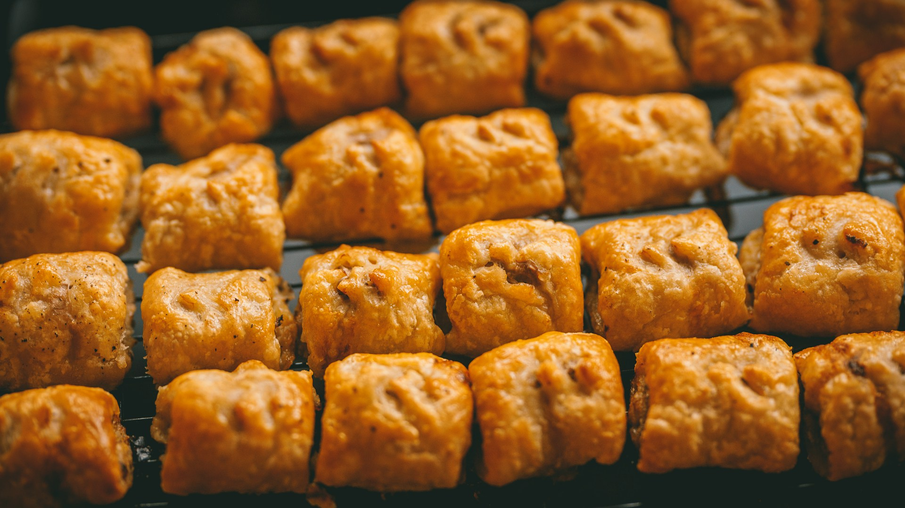

British Sausage Rolls

Description
A British staple of deliciously seasoned sausage baked in a crisp, buttery puff pastry. Another delightful family favorite but this one has a bit of a twist with the seasonings. Baked to perfection in their golden flakiness, these treats can be served either hot or cold. Enjoy!
Ingredients
- 1 tablespoon vegetable oil
- 1 medium onion, finely chopped
- 2 pounds sausage meat
- 3 medium eggs, preferably free-range divided
- Fine salt, to taste
- Freshly ground black pepper, to taste
- All-purpose flour, for the pastry
- 25 ounces homemade or store-bought puff pastry
- Cooking spray
Instructions
- In a small skillet, heat 1 tablespoon vegetable oil on medium heat until it shimmers. Add 1 finely chopped medium onion and cook until it starts to lightly brown, about 7 minutes. (Optional: Sage and thyme are commonly added to sausage rolls, though other herbs can be mixed into the meat as well. If you choose to add herbs then cook them here with the onions to help release their flavors.)
- In a large bowl, add 2 pounds sausage meat, the cooked onion, and 2 eggs. Season with fine salt, and freshly ground black pepper to taste. Mix until all the ingredients are thoroughly and evenly combined.
- Position a rack in the center of the oven and heat to 400 F. Lightly sprinkle all-purpose flour on a work surface. Roll out 25 ounces homemade or store-bought puff pastry or shortcrust pastry into two 8- by 10-inch rectangles. Cut each rectangle into 2 long strips (4 total) and rest them in the fridge for at least 10 minutes.
- Lightly spray 2 baking sheets with cooking spray. Place 2 cold pastry rectangles on each baking sheet. In the center of each pastry, form the meat mixture into a long sausage the length of the pastry strip, leaving a 1 1/2-inch border all around. Beat the remaining 1 egg in a small bowl and lightly brush the edges of the pastry.
- Fold the pastry over the meat filling to form long rolls. Flip the sausage roll over so the seam is on the bottom. Lightly brush the top surface with egg.
- Cut the rolls into 1 1/2-inch lengths. Or vary the length to the style of roll you want.
- Bake oven until golden brown, about 20 minutes. Leave them to cool before packing them into your picnic basket or lunch box, or simply eat them right away. Enjoy.